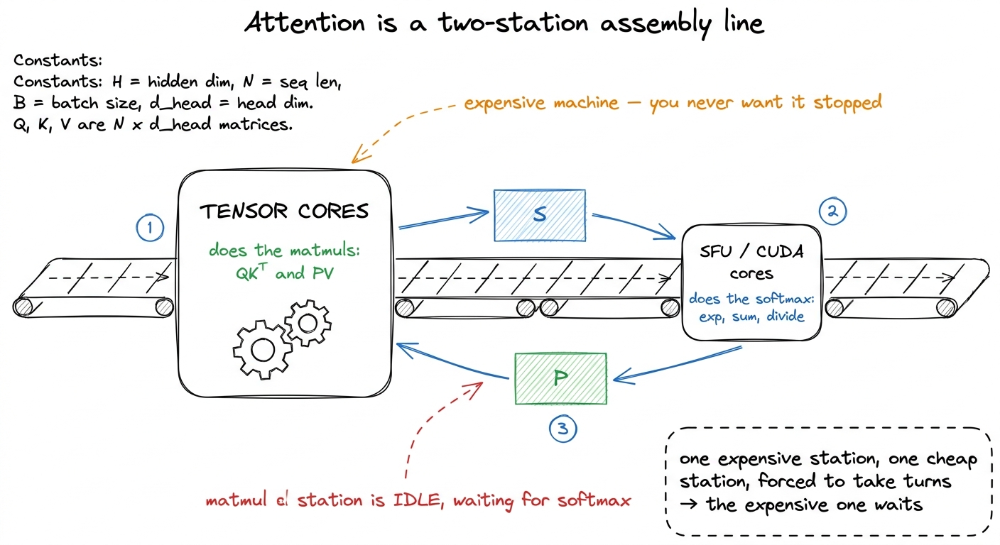
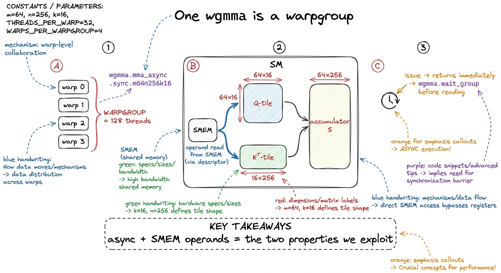
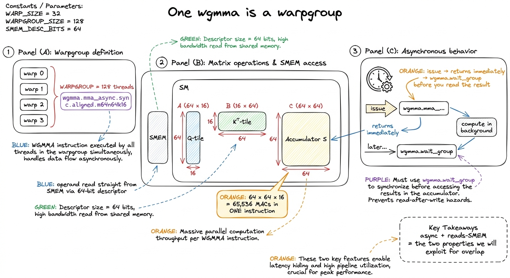

FlashAttention III: Hopper & async FA3
The first two FlashAttention kernels were written for a world where the SM did math and moved data with the same hands. You issued a cp.async to stage the next K/V tile, then you turned around and ran the same warps through the tensor cores on the current tile, and the whole art was interleaving those two jobs cleverly enough that neither stalled the other. On Ampere that got attention most of the way to its roofline. On Hopper it leaves the chip half-asleep — because Hopper split those two hands apart, and a kernel that still uses one warp to do both is holding a screwdriver like it's a hammer.
This article rebuilds attention as a Hopper-native kernel: loads driven by the Tensor Memory Accelerator (TMA) instead of threads, matmuls issued as wgmma warpgroup instructions, the SM's warps split into producers and consumers by warp specialization, softmax overlapped with the next matmul in a pingpong schedule, and — where the model tolerates it — FP8 inputs to feed the wider math. The target is every other worklog's: get honestly close to the hardware roofline and read every gain off a profiler, not a slogan. FlashAttention-3 is the published version of this kernel; I'll follow its structure and check my numbers against the H100's three regimes.1 FlashAttention-3 (Shah, Dao et al., 2024) targets exactly the sm_90a features here — TMA, wgmma, warp specialization, and FP8 — and reports up to ~740 TFLOP/s in BF16 (≈75% utilization) and near-1.2 PFLOP/s in FP8 on H100. My numbers below are of that shape, not a fresh benchmark.
Where FlashAttention-2 leaves H100 idle
Start with the honest baseline. FlashAttention-2, recompiled for sm_90a and run in BF16 on an H100 SXM5, lands around 35–45% of peak tensor throughput — call it ~350 TFLOP/s against the 989 TFLOP/s BF16 ceiling. That is not a bug; it is a kernel designed for a chip whose SMs weren't yet asymmetric. Point Nsight Compute at it and the story is not "memory-bound" and not "compute-bound" — it's serialization. The two matmuls of attention (S = QKᵀ and O = PV) and the softmax between them run in a strict chain, and the softmax's exponentials and row-reductions execute on the SFU and CUDA-core pipes while the tensor cores stand still.
That middle step is the whole problem. Softmax is a reduction, and its exp and rescale are not tensor-core work — on H100 the special-function unit runs exp at a small fraction of the rate the tensor cores chew through wgmma.2 Roughly: the tensor cores can retire on the order of hundreds of TFLOP/s of MMA, while the SFU issues MUFU.EX2 for the exponentials at a couple of hundred GFLOP/s per SM. Even though softmax is a tiny fraction of the FLOPs, at these rates it can occupy a real fraction of the time if you let it run alone. So every time a warp stops matmul-ing to do softmax, the most expensive silicon on the chip idles. FA-2's answer was to keep the softmax small relative to the matmul; Hopper's answer is better — never stop the matmul at all.

figure rendering · FlashAttention-2 serializes softmax against the matmul; on Hopper thatTMA: stop spending threads on address arithmetic
The first Hopper feature to reach for is the one that costs the least intellectual effort and buys the most headroom: TMA, the Tensor Memory Accelerator. On Ampere, staging a K tile into shared memory meant every thread in the block computing its own global address, issuing a cp.async, and burning registers on the index math. TMA replaces all of that with a single instruction: you describe the tile once as a tensor map (a small descriptor built on the host — base pointer, shape, strides, swizzle), and then one thread issues cp.async.bulk.tensor and a dedicated hardware unit copies the whole 2D tile from global memory (GMEM) into shared memory (SMEM), computing every address itself and swizzling on the way in.3 The tensor map (CUtensorMap, 128 bytes) is built once with cuTensorMapEncodeTiled and passed as a __grid_constant__ kernel argument. Getting the swizzle mode in the descriptor to match the swizzle wgmma expects for its SMEM operands is the single most common source of silent garbage in a first Hopper kernel.
The payoff is not mainly bandwidth — cp.async already saturated HBM's 3.35 TB/s if you tiled well. The payoff is freed registers and freed warps: TMA does the addressing, so the threads that used to do it are now free to do math, and the copy runs fully in the background against a shared-memory barrier. In the attention loop I issue a TMA load for K[j+1]/V[j+1] while the consumers compute on tile j. This is cp.async double-buffering with the address generation lifted off the SM entirely — the same idea we used to hide GMEM latency in double buffering with cp.async, now free of thread overhead.
// One thread kicks off the whole tile copy; hardware does the rest.
if (threadIdx.x == 0) {
cde::cp_async_bulk_tensor_2d_global_to_shared(
smem_K[stage], &tma_map_K, k_col, kv_row, bar[stage]);
cde::cp_async_bulk_tensor_2d_global_to_shared(
smem_V[stage], &tma_map_V, k_col, kv_row, bar[stage]);
// expected-bytes lets the barrier know how much traffic to wait for
bar[stage].arrive_and_expect_tx(K_TILE_BYTES + V_TILE_BYTES);
}
// consumers do NOT touch addresses — they just wait on bar[stage]wgmma: the matmul is now a warpgroup's job
The second feature reshapes the math. Hopper's tensor-core instruction is wgmma — warpgroup matrix-multiply-accumulate, and sm_90a-only — and the name is the whole point: the unit of work is no longer a single warp's wmma/mma.sync, it is a warpgroup of four warps (128 threads) issuing one asynchronous instruction, e.g. wgmma.mma_async.sync.m64n256k16. Two things changed versus Ampere's mma. First, it is async: you issue the wgmma, it retires in the background, and you wgmma.wait_group before touching the result — which is exactly what lets us overlap it with softmax. Second, at least one operand reads directly from shared memory through a descriptor, so the enormous register-staging dance of feeding mma.sync fragments largely disappears; TMA lands the tile in SMEM with the right swizzle and wgmma reads it in place. The Blackwell successor is a different instruction family entirely — tcgen05 writing into Tensor Memory — covered in what changed across A100/H100/B200.
For attention this maps cleanly: QKᵀ is one wgmma group producing the score tile S in registers/accumulator, and after softmax turns S into probabilities P, O += P·V is another wgmma group. The accumulator for O lives across the whole K/V loop, exactly as in FlashAttention's online formulation, rescaled by the running max each step.

figure rendering · On Hopper the matmul is a warpgroup instruction: four warps, one asyncWarp specialization: producers and consumers
Now the two features combine into the idea that actually moves the number. Because TMA loads run on a hardware unit and wgmma runs asynchronously, we no longer want every warp doing the same thing. Instead we specialize the warpgroups within a block into two roles:
- A small producer warpgroup whose only job is to issue TMA loads for future
K/Vtiles and flip barriers when they land. It does almost no math and needs almost no registers. - One or two consumer warpgroups that wait on the barriers, run the
wgmmamatmuls, do the softmax, and accumulateO.
The producer and consumers talk through a shared-memory circular buffer with a pair of barriers per stage (full/empty) — exactly what Hopper's mbarrier and arrive/wait primitives are for. The virtue is that data movement and compute are now structurally decoupled instead of interleaved by hand: the producer runs as far ahead as the buffer depth allows, and the consumers never wait on address math again.
There is one more Hopper knob that makes specialization pay: register reallocation. Because the producer needs almost no registers and the consumers are register-hungry (that O accumulator is large), you call setmaxnreg to donate the producer's register budget to the consumers.4 setmaxnreg.dec in the producer and setmaxnreg.inc in the consumer, cooperatively. The register file is 256 KB per SM (65,536 × 32-bit) and each thread is capped at 255 registers; warp specialization plus reallocation is how you actually get near that cap on the warps that need it without the producer wasting a symmetric share.

figure rendering · Warp specialization: one producer warpgroup drives TMA into a shared-mPingpong: overlapping softmax with the matmul
Specialization fixes the load/compute overlap. It does not, by itself, fix the stall we opened with — the softmax between the two matmuls still runs on the SFU while the tensor cores wait. The FA-3 trick here is a pingpong schedule across two consumer warpgroups, and it is pure instruction scheduling.
The insight is that softmax on one tile and the wgmma of the next tile are independent, and they use different execution units — softmax on the SFU/CUDA cores, matmul on the tensor cores. So you interleave two consumer warpgroups out of phase: while warpgroup 0 does the softmax (exp, rowmax, rescale) on its score tile, warpgroup 1 runs its QKᵀ wgmma on the tensor cores, and then they swap. The scheduler co-issues happily because the resources don't collide, and — this is the payoff — the tensor cores never see the grey idle gap from the opening figure, because the other warpgroup's softmax is filling the shadow of the current matmul.
// Two consumer warpgroups, ping-ponging on named barriers so they stay
// out of phase: one does softmax while the other does wgmma.
if (warpgroup_id == 0) {
softmax_rescale(S0, m0, l0); // SFU-heavy
named_barrier_arrive(SCHED_BAR); // hand the matmul slot to wg1
} else {
named_barrier_wait(SCHED_BAR); // take the matmul slot
wgmma_QK(S1, smemQ, smemK[stage]); // tensor-core-heavy, overlaps wg0's softmax
wgmma_commit_group();
}Even within a single warpgroup there is a smaller "2-stage" version — split the score tile so the PV wgmma of the first half overlaps the softmax of the second. Same principle: keep the tensor cores fed by always having a matmul ready to hide the softmax behind. This is the overlap philosophy of operator fusion, applied at instruction-scheduling level inside one kernel instead of across kernels.
With TMA + wgmma + warp specialization + pingpong, BF16 attention on H100 moves from FA-2's ~350 TFLOP/s to roughly 660–740 TFLOP/s — about 67–75% of the 989 TFLOP/s BF16 roofline, from a starting point near 35%. Nearly a 2× speedup, and essentially none of it came from doing less arithmetic; all of it came from never letting the tensor cores idle.
FP8: feeding the wider math
The last lever is precision. Hopper's tensor cores run FP8 (e4m3) at double the BF16 rate — a dense ceiling near 1,979 TFLOP/s (≈2 × 989) — so if the model tolerates it the same kernel climbs toward the low PFLOP/s range, with FA-3 reporting attention close to ~1.2 PFLOP/s. But attention in FP8 is not a free dtype swap; two things need care.
First, wgmma's FP8 path wants a specific operand layout — both operands effectively k-major — so the PV matmul needs P transposed relative to how softmax naturally produces it; FA-3 handles this with in-register byte permutes and a layout-aware V load via TMA. Second, and more important numerically: quantizing Q, K, V to e4m3 blindly wrecks accuracy on the outliers that attention distributions are full of. The fix is block quantization plus incoherent processing — scale per block and multiply Q/K by a random orthogonal matrix beforehand to spread the outliers — which brings FP8 attention error back down to the order of a well-quantized baseline.5 This block-scaling idea is exactly what Blackwell then bakes into hardware as NVFP4 — 4-bit e2m1 elements carrying FP8 block scales — so the scaling that FA-3 does in software becomes a native tensor-core format. On H100 you do it yourself; the trend line is that the hardware keeps absorbing these precision tricks. The lesson is the standard one: low precision is a systems decision, not a cast, and you validate it end-to-end before you trust the TFLOP/s.
Reading the number honestly
So where does this land against the roofline? Attention's arithmetic intensity for a reasonable head dimension sits comfortably right of the H100 ridge point — this is a compute-bound workload that should run near the tensor-core ceiling. FA-2 didn't, because it was scheduling-bound, not compute-bound; every optimization above was an attack on that hidden serialization. Getting BF16 to ~75% of a 989 TFLOP/s machine, and FP8 into the PFLOP/s range, means the kernel is finally limited by the thing you want to be limited by — the width of the math units themselves — which, per the three regimes, is exactly where you stop.
The through-line to the rest of the Hopper section is that none of these four features is about attention specifically. TMA, wgmma, warp specialization, and register reallocation are the general Hopper vocabulary, and a good sm_90a GEMM uses the identical toolkit — which is why the warptiled GEMM at 93.7% of cuBLAS is the natural next reading, and why the A100→H100→B200 tour frames every one of these as a response to the same growing FLOPs-to-bytes gap. Attention was just the first place the idle tensor cores were impossible to ignore.